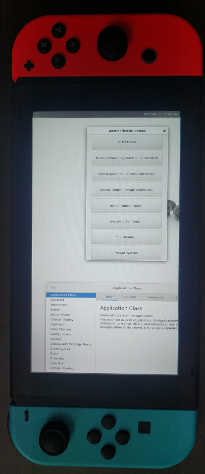

Nintendo Switch (nintendo-nx)
|  | |
| Manufacturer | Nintendo |
|---|---|
| Name | Switch |
| Codename | nintendo-nx |
| Released | 2017 |
| Category | testing |
| Original software | Nintendo Switch system software 1.0.0 (upgradeable to 14.1.1) |
| Hardware | |
| Chipset | Nvidia Tegra X1 |
| CPU | Quad-core 1.02 GHz Cortex-A57 |
| GPU | Maxwell |
| Display | 1280x720 |
| Storage | 32 GB |
| Memory | 4 GB |
| Architecture | aarch64 |
| Non-Android based device | ✔ |
{kind=link}
| USB Networking | |
|---|---|
| Flashing | |
| Touchscreen | |
| Display | |
| WiFi | |
| FDE | |
| Mainline | |
| Battery | |
| 3D Acceleration | |
| Audio | |
| Bluetooth | |
| Camera |
Unavailable
|
| GPS |
Unavailable
|
| Mobile data |
Unavailable
|
| SMS |
Unavailable
|
| Calls |
Unavailable
|
| USB OTG | |
| NFC | |
| Accelerometer | |
|---|---|
| Magnetometer | |
| Ambient Light | |
| Proximity | |
| Hall Effect | |
| Ir TX | |
|---|---|
| TrustZone | |
Contributors
- zhuowei
- the Fail0verflow developers (mainline kernel and bootloader port)
Maintainer(s)
- zhuowei
Users owning this device
- Bastindo (Notes: Patched model)
- BenTheTechGuy (Notes: Fusée Gelée Vulnerable)
- BlackEyedSquid (Notes: fusee-gelee vulnerable)
- Coatlessali
- Deathmist (Notes: Original 2017 model)
- DolphinChips (Notes: Unpatched bootrom, SW-7226-1641-2039)
- Gavodavo
- Jja2000
- Knuxfanwin8 (Notes: now with homebrew :^))
- Little-miss-synth (Notes: patched model, needs hardmod)
- Maff (Notes: Not modified)
- MollySophia
- Nergzd723 (Notes: not fusee-geleeable :()
- Thejsa (Notes: Original model, vulnerable to the RCM exploit.)
- Zephyr1112 (Notes: 2017 1st gen, running emuMMC Atmosphere, 128GB SDXC)
Software used
This uses Fail0verflow's Linux port for the Switch. They ported the mainline 4.16 kernel to the Switch, and ported Coreboot and U-Boot as the bootloader. They also developed a tool, ShofEL2, to boot the Switch to Linux from its recovery mode.
So the boot process is this:
- Switch boots to Tegra RCM flashing mode over USB
- ShofEL2 boots Coreboot
- Coreboot initializes hardware and launches U-Boot as its payload
- U-Boot starts SDP flashing mode over USB
- imx-usb-loader loads Linux kernel, device tree, and U-Boot script via SDP
- U-Boot script decompresses and boots Linux
What works
- Kernel compiles
- U-Boot and Coreboot compiles
- The ShofEL2 tool added to flashing methods in `pmbootstrap flasher` and can boot compiled Coreboot bootloader to USB SDP loading mode
What does not work
Everything.
Coreboot, U-Boot, and shofel2 built in pmbootstrap seems to work on their own: u-boot correctly enters the USB SDP flashing mode, and imx-usb-loader can interact with it.
The kernel itself also seems to work on its own: when booted with a known good coreboot/u-boot it does start, although it then immediately panics since no initramfs is provided by the known good bootloader and there's no rootfs on my test SD card.
However, attempting to boot the kernel with initramfs support freezes the device, either with coreboot/u-boot built with pmbootstrap or with the known good coreboot/u-boot. Unfortunately, postmarketOS needs the initramfs to setup encryption, so this will need to be addressed.
How to enter flash mode
The Switch, like some other Nvidia Tegra devices, uses the Tegra RCM flashing mode.
First, Pin 10 (the rightmost pin) needs to be grounded on the right JoyCon. To do this, one can use a wire, a paperclip, or a 3D printed jig. Guides can be found here.
Next, hold down Volume +, then press Power. The device should boot into RCM mode: the screen should stay blank, and "lsusb" should show:
$ lsusb Bus 002 Device 078: ID 0955:7321 NVidia Corp.
Installation
postmarketOS needs to be flashed to a microSD using "./pmbootstrap.py install --sdcard".
This device only supports tethered boot, so on each boot, one must enter flashing mode, then run "pmbootstrap flasher boot".
Debugging
This device exposes two serial ports, one in each JoyCon slot: Fail0verflow's Linux kernel uses the port in the left JoyCon slot. The pinout can be found here. I don't have a serial adapter, so I'm examining alternative kernel debugging methods.